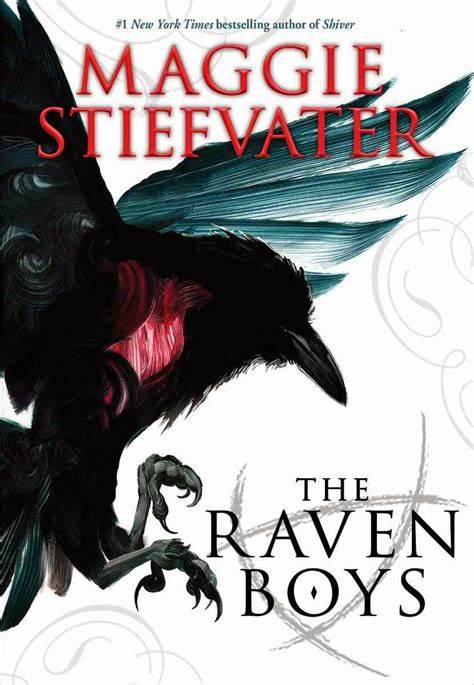

Six of Crow
Leigh Bardugo
Duologia

Ketterdam: un animado núcleo de intercambio nacional donde todo se puedo conseguir por el
precio
correcto... y nadie lo sabe mejor que el criminal prodigio Kaz Brekker. A Kaz le ofrecen la
oportunidad de un robo letal que podría hacerlo rico más allá de sus sueños alocados. Pero no lo
puedo llevar a cabo solo...
Un convicto con sed de venganza.
Un tirador de primera que no puede resistirse a una apuesta.
Un fugitivo con un pasado confidencial.
Una espía conocida como El Espectro.
Una Cardio que usa su magia para sobrevivir a los barrios bajos.
Un ladrón con un don para escapes difíciles.
Séis peligrosos marginados. Un robo imposible. El equipo de Kas es lo único que podría
interponerse entre el mundo y la destrucción... si no se matan primero entre ellos.
The raven boys: La profecia del cuervo
Maggie Stiefvater
Saga

Cada año, la noche de San Marcos, Blue Sargent acompaña a su madre al camino de los
espíritus
para ver a los que morirán en los siguientes doce meses. Sin embargo, este año es distinto:
Blue, la
única de su familia que no tiene facultades adivinatorias, ha visto a uno de estos espíritus, y
eso
solo puede significar que es su amor verdadero o que lo va a matar.
Él se llama Gansey y es el estudiante más rico del colegio privado más elitista de la zona,
la
Academia Aglionby, cuyo emblema es un cuervo que todos los estudiantes llevan bordado en el
jersey.
Junto a Adam, un estudiante brillante, celoso del poder económico de sus compañeros; Ronan, un
chico
con problemas emocionales desde la muerte de su padre, y Noah, el observador taciturno que
apenas
habla, forman los chicos del cuervo, y están empeñados en descubrir la ubicación de la tumba del
último rey galés, Glendower, el Rey Cuervo.
Blue sabe que debe mantenerse alejada de ellos, porque los chicos del cuervo siempre traen
problemas. Aunque nunca podría imaginarse el siniestro y oscuro mundo que los rodea, donde la
magia
dejará de ser un juego para convertirse en una amenaza mortal